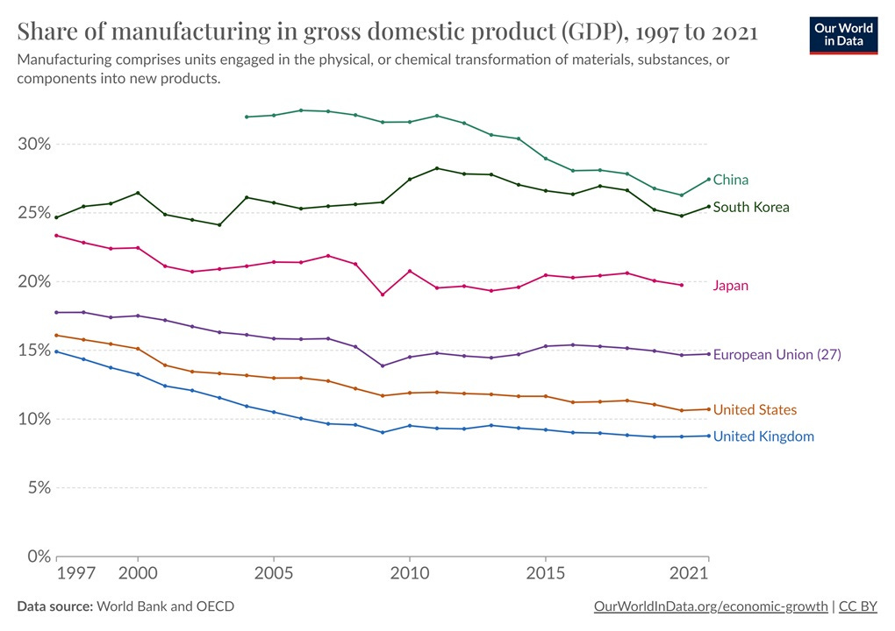

37 Geopolitics
37.1 Post-Westphalian Order
Vergerio
The Westphalian order refers to the conception of global politics as a system of independent sovereign states, all of which are equal to each other under law. The most popular story about this political system traces its birth to the Peace of Westphalia in 1648, follows its strengthening in Europe and gradual expansion worldwide, and finally, near the end of the twentieth century, begins to identify signs of its imminent decline. On this view, much of the power that states once possessed has been redistributed to a variety of non-state institutions and organizations—from well-known international organizations such as the UN, the EU, and the African Union to violent non-state actors such as ISIS, Boko Haram, and the Taliban along with corporations with global economic influence such as Facebook, Google, and Amazon. This situation, the story often goes, will result in an international political order that resembles medieval Europe more than the global political system of the twentieth century.
Over the last two decades, scholars working on the history of the global order have painstakingly shown the complete mismatch between the story of Westphalia and the historical evidence. The nation-state is not so old as we are often told, nor has it come to be quite so naturally. Getting this history right means telling a different story about where our international political order has come from—which in turn points the way to an alternative future.
The post–Cold War period has indeed seen the growth of non-state organizations, but in more recent years a range of right-wing leaders has only buttressed the influence of the nation-state. The spectacular resurgence of nationalism—from Brexit and Donald Trump to the ascendence of Narendra Modi, Jair Bolsonaro, and Viktor Orbán—has led some to speculate that the hour of the Westphalian order may not have passed after all, while others stick to their guns and suggest that this phenomenon is a mere spasm of a dying system. Getting the history of the states-system right has critical implications for both of these positions.
Generations of international relations students have absorbed the idea of the 1648 Peace of Westphalia as a pan-European charter that created the political structure that now spans the entire globe: a system of legally (if not materially) equal sovereign states. Along with this political structure, this story goes, came other important features, from the doctrine of non-intervention, respect of territorial integrity, and religious tolerance to the enshrinement of the concept of the balance of power and the rise of multilateral European diplomacy. In this light, the Peace of Westphalia constitutes not just a chronological benchmark but a sort of anchor for our modern world. With Westphalia, Europe broke into political modernity and provided a model for the rest of the world.
Sovereign statehood only became the default within Europe in the nineteenth century, with entities like the Holy Roman Empire gradually giving way to sovereign states like Germany. While often overlooked in this regard, Latin America also transitioned into a system of sovereign states during that period as a result of its successive anti-colonial revolutions. This system then became the default of the international order through decolonization in the 1950s through the 1970s, when independent sovereign states replaced empires worldwide. Throughout this transition various alternatives were considered, including—up until the 1950s—forms of federations and confederations that have since been largely forgotten. Over the past several decades, the state has not only triumphed as the only legitimate unit of the international system, but it has also rewired our collective imagination into the belief that this has been the normal way of doing things since 1648.
As late as 1800, Europe east of the French border looked nothing like its contemporary iteration. As historian Peter H. Wilson describes in his recent book Heart of Europe (2020), the Holy Roman Empire, long snubbed by historians of the nation-state, had been in existence for a thousand years at that point; at its peak it had occupied a third of continental Europe. It would hold on for six more years, until its dissolution under the strain of Napoleonic invasions and its temporary replacement with the French-dominated Confederation of the Rhine (1806–1813) and then the German Confederation (1815–1866).
The latter mirrored the Holy Roman Empire in many ways; it hardly looked like a nation-state at all. Much of its territory still overlapped—in so-called “pre-modern” fashion—with the territory of the Habsburg monarchy, another composite state that began its centralization process earlier than the Holy Roman Empire but did not look much like a nation-state either until the late nineteenth century. It solidified into the Austrian empire (1804–1867) and then the Austro-Hungarian empire (1867–1918), but the 1867 power-sharing deal granted Hungary considerable autonomy and essentially allowed it to run its own mini-empire. Meanwhile, to the south, what we think of as modern-day Italy was still a patchwork of kingdoms (Sardinia, the Two Siciles, Lombardy-Venetia under the Austrian Crown), Duchies (including Parma, Modena, and Tuscany), and Papal States, while territory further east was ruled by the Ottoman Empire. The map of Europe did not begin to look more like a collection of nation-states until the middle of the nineteenth century: Belgium and Greece appeared in 1830, while Italian and German unification were completed in 1871.
We are accustomed to thinking of Europe as the first historical instance of a full-blown system of sovereign states, but Latin America actually moved toward that form of political organization at just about the same time. After three centuries of imperial domination, the region saw a complete redrawing of its political geography in the wake of the Atlantic Revolutions of the late eighteenth and early nineteenth century. Following in the footsteps of the United States (1776) and Haiti (1804), it witnessed a series of wars of independence which, by 1826 and with only a few exceptions, had essentially booted out the Spanish and Portuguese empires. Of course, Britain promptly gained control of trade in the region through an aggressive combination of diplomatic and economic measures often referred to as “informal empire,” but its interactions were now with formally sovereign states.
Over the remainder of the century, the sovereign federative structures that had emerged in the aftermath of independence—Gran Colombia (1819–1831), the Federal Republic of Central America (1823–1841), and the United Provinces of the Río de la Plata (1810–1831) collapsed through bloody civil wars that lasted for decades, pitting regions against centralized governments and including multiple attempts to reconstitute these larger political conglomerates. Thus, much as with Western Europe, the region did not stabilize into a system of nation-states that looks like its contemporary iteration until the end of the nineteenth century.
Empires, of course, continued to thrive despite the growing popularity of nation-states. Until World War II the world was still dominated by empires.
A mere seventy years ago, what we now consider to be the self-evident way of organizing political communities was still just one of the options available to our collective imagination.
Even the most powerful contemporary multinational corporations—Facebook, Google, Amazon, Apple, and the rest—are drastically more limited in their formal powers than were the famous mercantile companies who were central actors in the international order until the mid-nineteenth century. The two largest, the British and the Dutch East India Companies, founded in 1600 and 1602 respectively, amassed spectacular amounts of power over their two-hundred-year existence, becoming the primary engine of European imperial expansion. While these companies started off as merchant enterprises seeking to get in on Asia’s lucrative trading network, they gradually turned into much more ambitious endeavors and grew from their original outposts in India and Indonesia into full-on polities of their own. They were, as various scholars now argue, “company-states”—hybrid public-private actors that were legally entitled to rule over subjects, mint money, and wage wars. From this perspective, contemporary non-state actors are still relatively weak compared to states, who still monopolize far more formal power than all other actors in the international system.
The so-called “Westphalian order” begins to look much more like an anomaly than the status quo.
To think about how decentering the state might matter, consider one historical example. Only sixty years ago, the challenges that colonized peoples faced in their struggle for freedom were exacerbated by the fact that, since they were not states themselves, they had almost no international legal rights against the states they sought to defy. Most importantly, they were not allowed to use force against their occupiers; if they did so, both domestic and international law considered them to be criminals rather than combatants. This applied regardless of the legitimacy of their cause, or of their ability to organize themselves into a complex network of national liberation movements. While in the majority of cases, they eventually managed to achieve freedom and found a place at the global diplomatic table through the formation of their own independent states, they would have found a much less obstructed path to freedom if early on they had enjoyed a baseline of rights in their capacity as collective actors.
Engaging with this history makes the current centrality of the states-system as a basis for organizing the globe look recent and in fairly good shape, not centuries-old and on the verge of collapse. The layering of sovereignty within polities like the EU, the rising power of corporations, the prominence of violent groups not considered “states”—none of these developments is fundamentally at odds with how international relations operated over the past 373 years. What is truly new, from a longue durée perspective, is the triumph of the state worldwide, and our inability to think of ways of organizing the world that do not involve either nation-states or organizations of nation-states.
Much more is a stake in our talk about international order, then, than quibbles over historical periodization. Misrepresenting the history of the states-system plays into the hands of nationalist strongmen, who depict themselves as saving the world from a descent into stateless anarchy, controlled by globalist corporations who couldn’t care less about national allegiance.
Today the norm is that states enjoy far more rights than any other collectivity—ranging from indigenous peoples to transnational social movements—simply because they are states. But it is not at all clear why this should be the only framework available to our collective imagination, particularly if its legitimacy rests on a history of the states-system that has long been debunked. The myth of Westphalia has ultimately inflicted serious damage to our ability to think creatively about how to tackle the pressing global challenges that transcend both borders and levels of governmental organization, ranging from neighborhoods, villages, and towns all the way up to international institutions.
Vergerio (2022) Beyond the Natuion-State
37.1.1 Conquest is back
Smith
Venezuela just voted to claim two-thirds of the territory of neighboring Guyana. Guyana has vowed to defend itself. Brazil has moved troops to the border in case Venezuela tries to invade via Brazilian territory.
This is one more sign of the unraveling of Pax Americana; the U.S. is overburdened with numerous other conflicts, and doesn’t have much attention or power to spare. But it also demonstrates another crucial fact about geopolitics in the 21st century: The norm of territorial integrity is breaking down, and conquest is coming back into vogue.
The end of World War 2 was supposed to put a stop to the practice of seizing bits of territory from neighboring countries. Article 2 of the United Nations Charter states:
All Members shall refrain in their international relations from the threat or use of force against the territorial integrity or political independence of any state, or in any other manner inconsistent with the Purposes of the United Nations.
This echoes the language in Woodrow Wilson’s Fourteen Points, in which he suggested that the League of Nations should provide “guarantees of political independence and territorial integrity to great and small nations alike.” And it hearkens back to the idea of Westphalian sovereignty, which was established gradually after Europe’s disastrous Thirty Years’ War.
Something changed in 2014. When Russia conquered Crimea by force, it violated the principle of territorial integrity that great powers had largely upheld since World War 2. Crimea was an internationally recognized part of the territory of Ukraine, a sovereign nation. Obviously Russia claimed that Crimea belonged to it by historical right — that Khruschev had made a mistake by giving Crimea to Ukraine — but when have conquerors ever failed to make such claims? Everyone who conquers their neighbors land says “This land rightfully belongs to us.” It’s conquest all the same.
Russia followed its conquest of Crimea with a full-blown invasion and attempted conquest of Ukraine. China, meanwhile, has made more incremental moves — slowly taking land in Bhutan, pressing India along their disputed border, seizing reefs from the Philippines, and claiming the South China Sea as its own. Smaller would-be conquerors are getting in on the game as well; Venezuela’s claim to Guyana is the most obvious example, but Azerbaijan also just claimed 8 Armenian villages. Meanwhile, a popular nationalist leader in Romania campaigns with maps of a “Greater Romania”.
Conquest has returned to our world.
I believe that territorial integrity should be the U.S.’ central guiding principle in Cold War 2.
Avoiding a return to a jungle-like world of empires and conquerors is a top priority, both for human freedom and for the health of the global economy. Territorial integrity is sure to be a popular rallying cry as well, which will help the U.S. win the contest for allies. And since Russia and China have shown their willingness to grab land from smaller, weaker nations, upholding territorial integrity helps the U.S. draw a bright distinction between our values and theirs.
China believes Taiwan is a breakaway province, and that conquering it by force would be upholding territorial integrity rather than violating it. And in the Israel-Gaza conflict, the borders between Palestine and Israel are not well-defined. China’s disputed border with India is…well, disputed.
Border disputes should be hashed out by negotiation and compromise, not by force of arms. Alternatives to territorial integrity
There are two basic alternatives to the principle of territorial integrity: 1) liberal interventionism, and 2) indigenism. Both are deeply flawed concepts, but only the second one is going to present a real challenge to territorial integrity in the next decade or two.
Liberal interventionism basically says that if a sovereign state is doing something very bad within its own borders — a genocide or other mass atrocity — it’s acceptable for powerful countries to invade that state in order to put a stop to the atrocity.
Indigenism (sometimes called autochthonism) will be a much tougher challenge for the principle of territorial integrity. Basically, indigenism is the idea that a group of people — a specific race, religion, ethnicity, tribe, etc. — collectively have permanent rights to a piece of land. Basically, it’s a claim of “We were here first, so this is our land.”
The idea that every racial or religious or ethnic group has some inalienable homeland to which they can always return confers a sense of security and permanence.
The idea that a specific race or religion or ethnicity collectively owns a piece of land very easily lends itself to institutionalized racism. Indigenism thus inherently weakens the concept of individual equality and human rights.
An even bigger problem with indigenism is the question of who is actually “indigenous”. National mysticism — the belief that different groups of humans were created separately on different plots of land — is just flat-out false.
All land is stolen land — in fact, it has been stolen many, many times.
In the end, the victory will simply go to the side with the army powerful enough to back up their claims. Again, we emerge back into the law of the jungle.
Territorial rights can be enforced at the level of the nation-state, rather than the racial or religious or ethnic group. So rejecting indigenism doesn’t mean that any act of conquest or expulsion must be respected thenceforth as “facts on the ground”.
In any case, both liberal internationalism and indigenism are fatally flawed as principles for determining who should invade whom. Territorial integrity — the idea that nobody should invade anybody — has much greater potential to make all the people of Earth feel secure in their homes.
37.2 Eur-Asian Primacy
Policy Tensor
In the history of modern great power relations, the central role played by Russo-German relations has been obscured by daydreams about dashing young Anglo-Saxons defeating Nazi forces in a heroic midcentury struggle. It’s not just that it was the Red Army that crushed both the Wehrmacht and the Kwantung Army, the entire geopolitical history of the twentieth century needs to be reconceived. In order to appreciate the secret history of the past century, instead of putting US primacy at the center of the frame, we need to center Russo-German relations.
In this frame, the cycles of war and peace over the past century, at least, are governed less by the passing of the baton between the Anglo-Saxon sea powers, than by the relations of the land powers in the western half of what Mackinder called the “world island.” Mackinder delivered his lecture on “The Geographical Pivot of History” at the Royal Geographical Society in 1904. His central insight was that the geopolitical position of the power that occupied the central position in Eurasia may permit the control of the entire supercontinent; and with it would come world control; simply because Eurasia contains more power potential than the rest of the world combined. Mackinder’s genius allowed him to predict the emergence of the Soviet Union as a superpower. As a British policymaker, he tried to destroy the monster in the crib by arming the Whites in the Russian civil war.
American strategists have long understood that there are three potential seats of world power: on the north American continent and on the eastern and western extremities of Eurasia. As a corollary, it is recognized by classical and modern geopolitical analysts that control of Eurasia is tantamount to ‘world control’. Of course, Russia is the only power in the system that could possibly bring both extremities of Eurasia under the command of a single center of authority.
The Anglo-Saxon geopolitical position is based on what Barry Posen called ‘command of the global commons’ — a modern version of sea power envisioned by Mahan as the key to world power. But not only. The Anglo-Saxon world position is also based on the geopolitical orientation of Europe and Japan. The difference between American hegemony, and the mere fact of American maritime primacy, is the orientation of Europe and Japan — otherwise, it would be ‘dominance without hegemony’, as threatened to obtain in the mid-2000s and again under Trump. The US has tried to and will continue to prevent either extremity of Eurasia from falling under the control of a single power. The exception may be a unified Europe “led from behind” by Germany. An independent line by Europe, especially in a future Trumpist administration, cannot easily be thwarted by the Americans.
37.3 Military Arsenals
Smith
The phrase “Arsenal of Democracy” doesn’t refer to the size of our existing military, nor does it refer to our military spending. It refers to our military production potential — how much military equipment we could make in the event of a long conventional war against a major power like China.
The United States has fought multifront wars before. But in past conflicts, it was always able to outproduce its opponents. That’s no longer the case: China’s navy is already bigger than the United States’ in terms of sheer number of ships, and it’s growing by the equivalent of the entire French Navy (about 130 vessels, according to the French naval chief of staff) every four years. By comparison, the U.S. Navy plans an expansion by 75 ships over the next decade.
Defending U.S. allies won’t be possible unless the United States gets its defense-industrial base in order. Since the start of the Russia-Ukraine war, total U.S. defense production has increased by a mere 10 percent—even as the war demonstrates the staggeringly high consumption of military ammunition in a major conflict.

Manufacturing isn’t the only thing you need for a strong military — software, logistics, and other things also help. But most of the economic output that goes into fighting a war consists of physical weapons and supplies. For years, pundits in the U.S. dismissed the importance of manufacturing, arguing that service industries like health care and education were more important sources of the good jobs of the future. Whether or not that was true, it completely neglected the military importance of manufacturing. This blase attitude toward deindustrialization has now come back to haunt us.